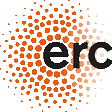

Funded by the
European Union
European Union

- European Research Council
- DANAE · ERC CoG 101087663
- SELDOM
- CRYSBEAM
- European Innovation Council
- TECHNO-CLS · EIC Pathfinder 101046458
- MHz-TOMOSCOPY · EIC Pathfinder 101046448
- Marie Skłodowska-Curie Actions
- TRILLION · Global Fellowship 101032975
- N-LIGHT · RISE 872196
Views and opinions expressed are those of the authors only and do not necessarily reflect those of the European Union or the granting authority. Neither the European Union nor the granting authority can be held responsible for them.
 National Institute
National Institute